ようこそ湯布院へ
大分県由布市の由布岳の麓に広がる人気温泉地「湯布院」
自然と温泉と食に恵まれ、子供から大人まで楽しむことができる魅力的な町です。
そんな魅力的な町に長年住む、地元民が湯布院のおすすめスポットを定番から穴場まで紹介していきます。
皆さんの旅行のお供にしていただければと思います。
【金鱗湖】
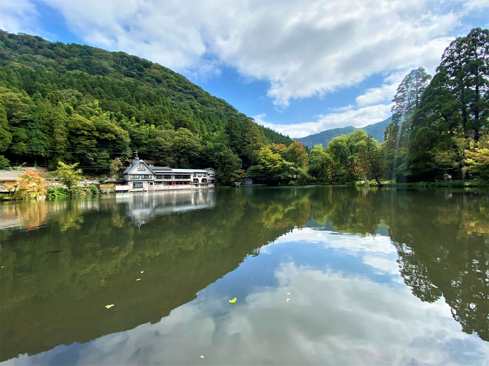 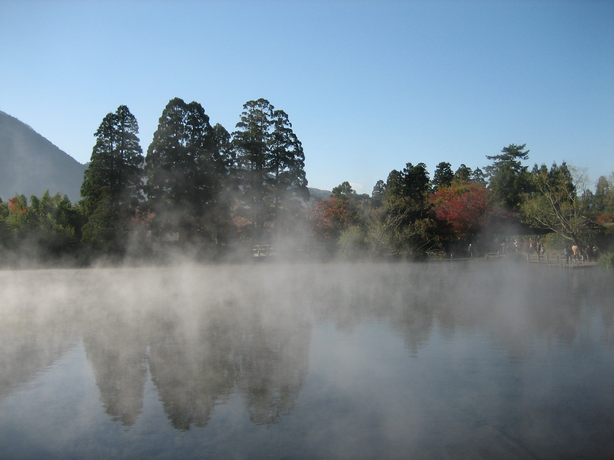自然に囲まれた場所にある金鱗湖は湯布院を代表する観光スポットです。
5つの河川が流入し、温泉と清水が湧き出ています。温泉水と外気の温度差により、秋から冬にかけて早朝には池面から霧が立ち上がる幻想的な風景が広がります。
新緑や紅葉など四季折々の風景を楽しむことができ、散策に最適です。
また、周囲には湖の景色を眺めながらリラックスできるカフェ等もあり、ゆっくりとした時間を楽しむことができます。私も冬の朝は早起きをし、この幻想的な風景と緑をたくさん吸い込み、リフレッシュをしてました。
- アクセス
- 営業時間
大分県由布市湯布院町川上1561‐1 由布院駅から車で10分
24時間
【狭霧台】
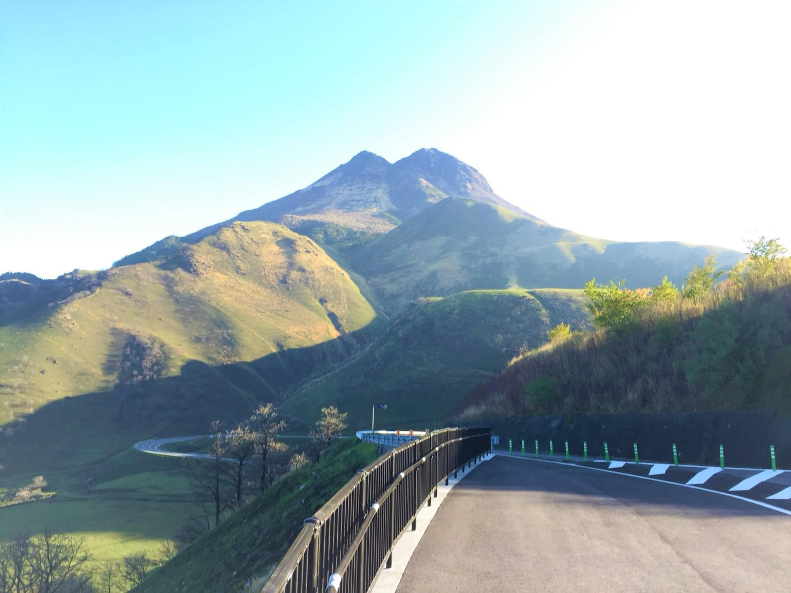 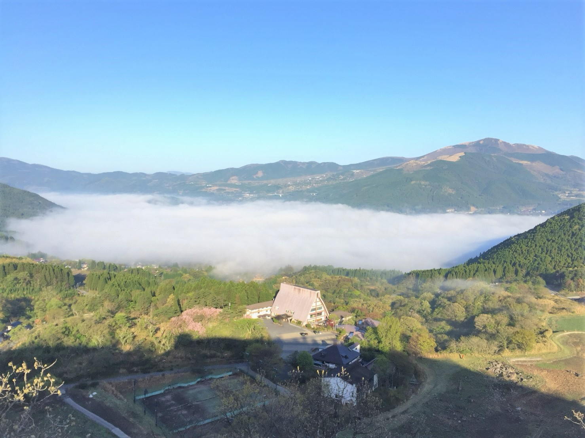九州でも有数のドライブコースとしても知られている県道11号沿いに位置し、標高約680ｍから湯布院の町並みを一望することができる展望台です。
由布岳や自然に囲まれた展望台では、四季折々の景色を楽しむことができます。また秋から冬にかけては朝霧が湯布院の街を包む幻想的な風景を見ることができます。
- アクセス
- 営業時間
大分県由布市湯布院町川上 湯布院ICから車で15分
24時間
【湯布院フローラルヴィレッジ】
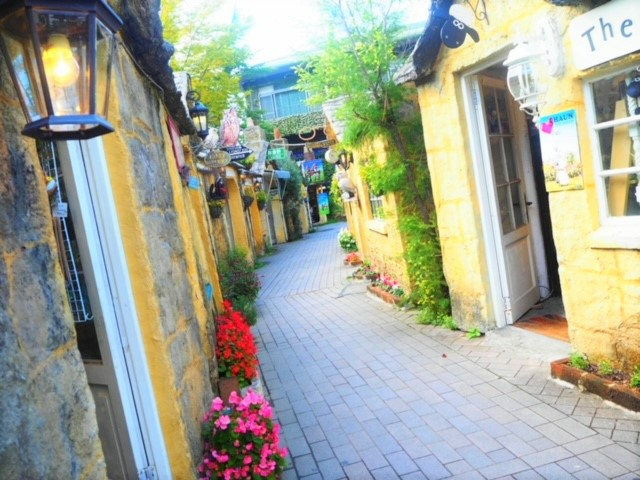 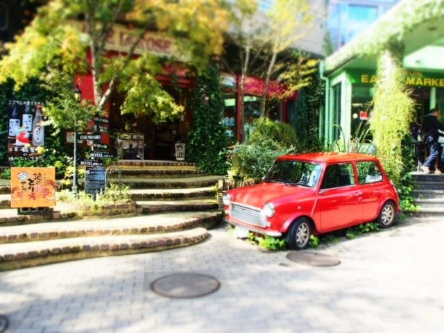ハリー・ポッターの撮影地として採用されたイギリスのコッツウォルズ地方の街並みを再現した、メルヘンでまるで絵本の中に入り込んだような魅力的な観光スポットです。
敷地内には花に包まれ、ショッピングやグルメ、ホテルだけではなく、フクロウやウサギ、ポニーがお出迎えをしてくれる、小さい子供から大人まで楽しめます。
また敷地の奥には赤色のヴィンテージカーがあり、人気の撮影スポットにもなっています。
- アクセス
- 営業時間
大分県由布市湯布院町川上1503-3 由布院駅から車で5分
9:30~17:30
【田舎庵】
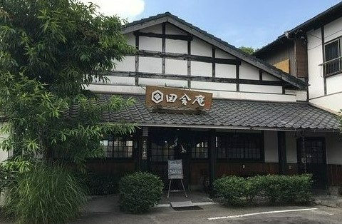 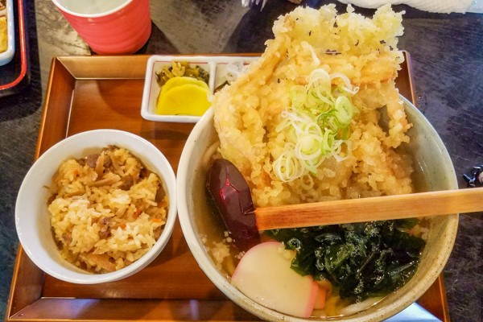昭和44年創業、地元民から観光客まで多くの人から愛され、お昼時には行列のできる人気の手打ちうどん屋さん。
温かいうどんから冷たいうどん、そして大分名物のとり天もあります。また人気メニューの大分県産ごぼうを使用した「ごぼ天うどん」はごぼうの美味しさとサクサクのごぼ天からでる出汁の旨みが格別です。
豊富なメニューで、四季折々の限定メニューもおすすめです。
私も小さい頃から通っている、懐かしい味です。
- アクセス
- 営業時間
大分県由布市湯布院町川上1071-3 由布院駅から徒歩で10分
11:00~16:00(LO;15:30)
【はなの舞 旬菜 鄙屋】
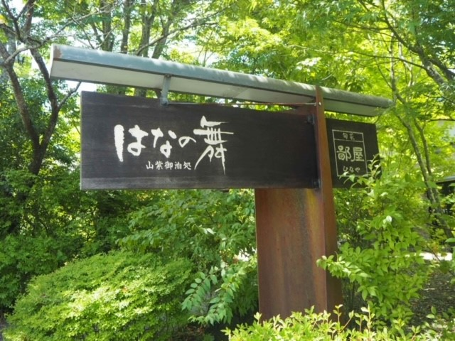 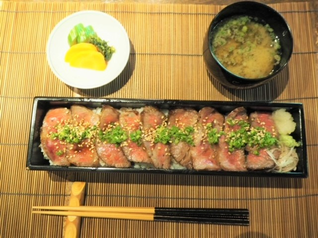メインの大通りから少し奥まった所にある旅館「山紫御泊処 はなの舞」に併設されたレストランです。
大きな窓から美しい緑を眺めながら、中央の暖炉と共に、温かい空間でリラックスした時間を過ごせます。
そんなはなの舞の名物ランチ、大分県産豊後牛を使用した「牛箱弁当」はレアで焼かれたお肉がぎっしりと並び、口にするととろけるの柔らかさと旨みが広がります。
またメインの牛箱弁当だけではなく前菜のお豆腐料理とデザートも格別です。湯布院に来たら外せない、逸品です！
- アクセス
- 営業時間
大分県由布市湯布院町川上2755-2 由布院駅から車で10分
11:30~(LO;13:30) 毎週木曜日定休日 完全予約制
【La Verveine】
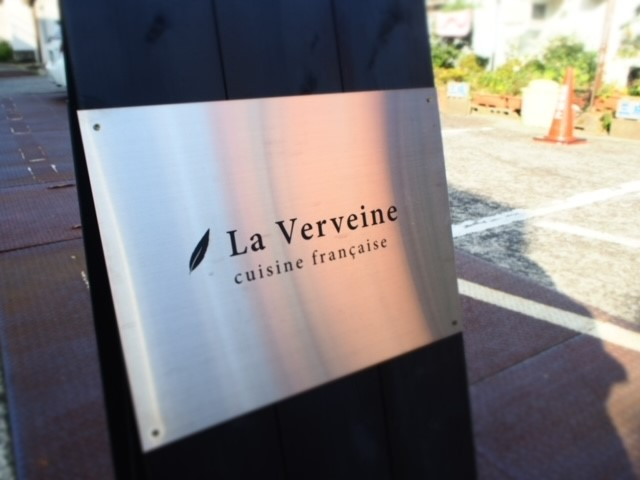 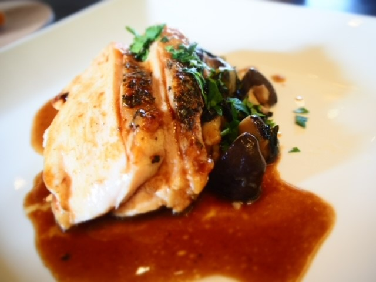 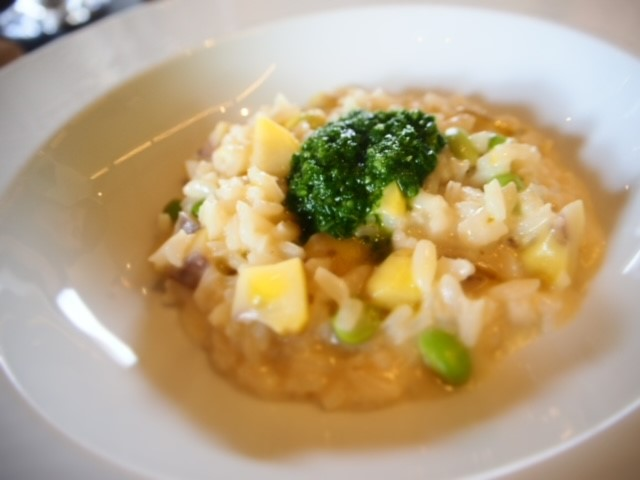 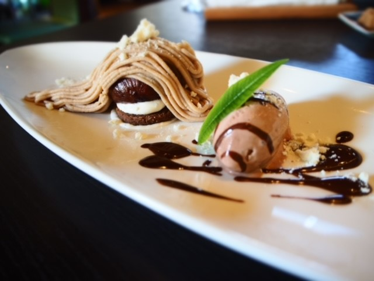素敵なご夫婦で営まれている、古民家を改装した本場の贅沢フレンチ料理屋さん。
シェフはアジアレストランベスト50に選ばれたフレンチレストランで３年間修業し、その後フランスに渡り７年間腕を磨いた後に、由布院でフレンチ料理屋さんを始めました。
そんなシェフの作る料理は大分県産の食材をふんだんに使った、見て楽しい食べておいしい逸品となってます。
フレンチといっても堅苦しい雰囲気ではなく、店内からは由布岳も見える明るいお店で、コース料理を楽しむことができます。
私はおいしいあまりに連日通う日もあるくらいとてもお気に入りのお店です。
- アクセス
- 営業時間
大分県由布市湯布院町川上3064-3 由布院駅から徒歩で5分
12:00~15:00(LO;14:00) 18:00-22:00(LO;21:00) 不定休
【由布院玉の湯 ティールーム・ニコル】
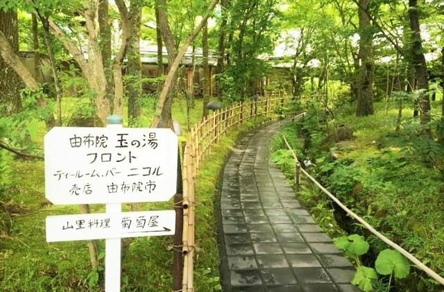 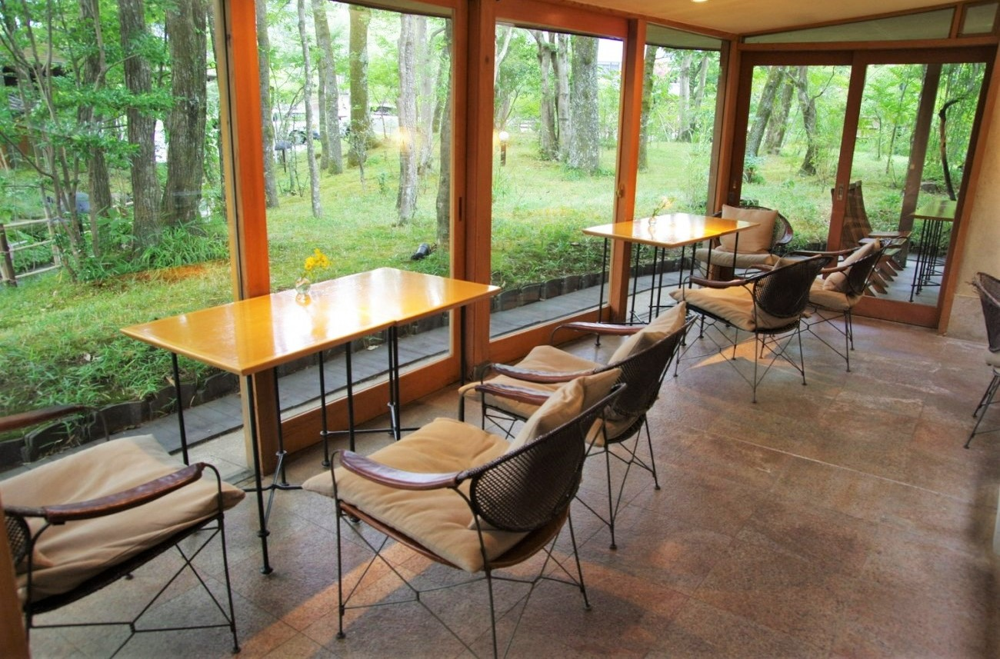 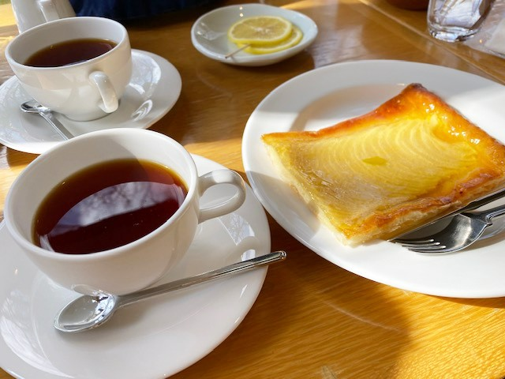 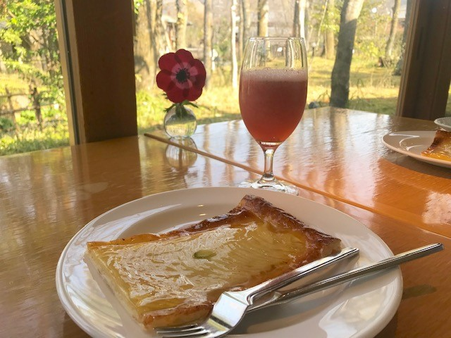由布院御三家の一つの玉の湯旅館に併設されているティールーム・ニコル。
雑木林に面した明るいテラスで、四季折々の様子を楽しみながら、のんびりとした時間を過ごすことができます。
中でもオリジナルコーヒーは、九州初の珈琲認定士で「カップテイスターズ・チャンピオンシップ」の世界大会にも出場した蘭館のもので、ニコルオリジナルのフルーティなモカベースの一杯です。
そんな珈琲の共に頂いてほしいのは、大人気の「アップルパイ」です。
午前中には売り切れる幻のアップルパイは、薄いパイ生地の上に薄くスライスされたリンゴがきれいに並べられており、リンゴのシャキシャキとした食感と甘酸っぱさがたまらない逸品です。
アップルパイのほかにもチーズケーキやシフォンケーキ、別府の老舗パン屋「友永パン」のあんぱんなど豊富なメニューが用意されており、美味しいデザートと飲み物で、ゆっくりとした時間を味わえます。
私は季節ごとに変わる季節のジュースとアップルパイがお気に入りです。
- アクセス
- 営業時間
大分県由布市湯布院町川上2731-1 由布院駅から徒歩で13分
11:00~16:00
【亀の井別荘 茶房 天井桟敷】
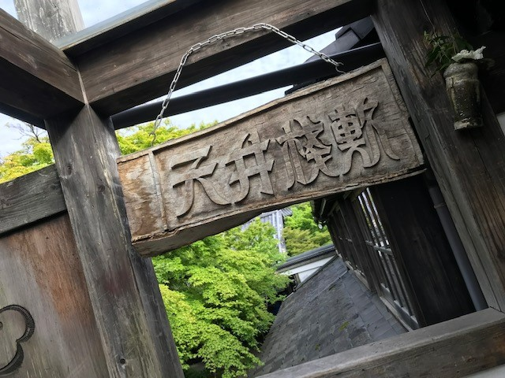 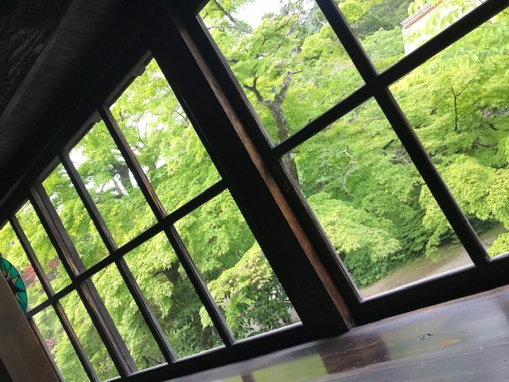 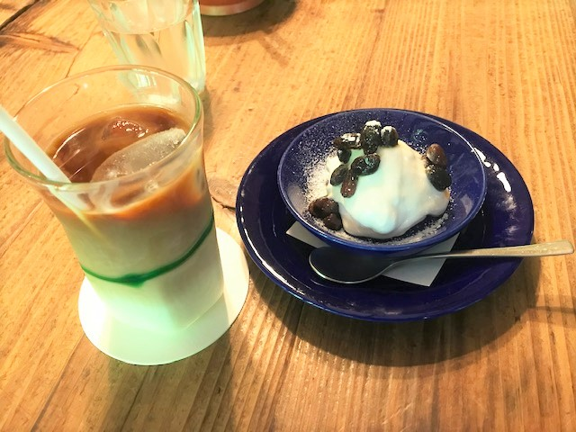 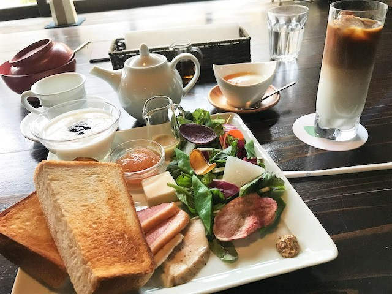こちらも由布院御三家の一つの亀の井別荘に併設されている茶房天井桟敷。
金鱗湖のすぐ近くに位置するため、散策後の休憩に丁度いい空間になっています。緑豊かな自然に囲まれ、四季折々の風景を楽しむことができます。
江戸末期の造り酒屋を移築した古く味わいのある建物の中では、重厚で荘厳な「グレゴリオ聖歌」がしっとりと流れ、ゆっくりとした贅沢な時間を味わうことができます。
中でも天井桟敷名物の由布岳をイメージした「モンユフ」は、クリームチーズとホイップにレーズンがトッピングされた甘さ控えめの大人のスイーツです。
また天井桟敷ではモーニングもあり、大分県産の食材を使ったボリューム満点のプレートになっています。
ぜひ、モーニング、カフェタイムの両方の時間を楽しんでください。
- アクセス
- 営業時間
大分県由布市湯布院町川上2633-1 由布院駅から徒歩で20分
9:00~17:00